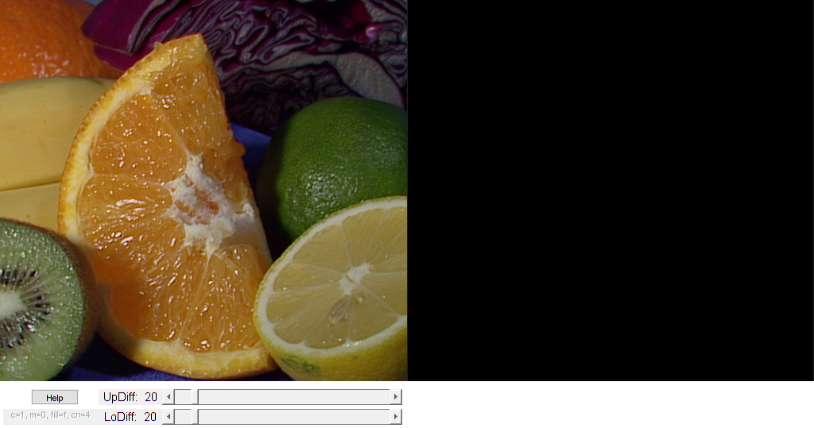

Flood-filling in an image
An example using the Flood-Fill technique
In this sample you will learn how to use the following OpenCV functions:
Sources:
function varargout = ffilldemo_gui(im) % load source image if nargin < 1 src = imread(fullfile(mexopencv.root(),'test','fruits.jpg')); elseif ischar(im) src = imread(im); else src = im; end % make sure we start with a color image if size(src,3) == 1 src = cv.cvtColor(src, 'GRAY2RGB'); end % create the UI h = buildGUI(src); if nargout > 0, varargout{1} = h; end end function onClick(~,~,h) %ONCLICK Event handler for mouse click on images % ignore anything but left mouse clicks if ~strcmp(get(h.fig,'SelectionType'), 'normal') return; end % current parameters p = getappdata(h.fig, 'params'); % which axis is active (color or gray) if p.isColor idx = 1; else idx = 2; end % retrieve location of mouse click (in image coordinates) % and use it as flooding seed point seed = get(h.ax(idx), 'CurrentPoint'); seed = seed(1,1:2); % flood fill options newVal = randi([0 255], [1 3]); if ~p.isColor newVal = newVal * [0.299; 0.587; 0.114]; end if p.ffillMode == 's' lo = zeros(1,3); up = zeros(1,3); else lo = repmat(p.loDiff,1,3); up = repmat(p.upDiff,1,3); end flags = {'Connectivity',p.connectivity, ... 'FixedRange',p.ffillMode=='f', 'MaskFillValue',p.newMaskVal}; % apply flood fill on selected image (color or gray) dst = get(h.img(idx), 'CData'); if p.useMask % update mask as well mask = get(h.img(3), 'CData'); mask = cv.threshold(mask, 1, 'MaxValue',128, 'Type','Binary'); [dst,~,area,mask] = cv.floodFill(dst, round(seed-1), newVal, ... 'Mask',mask, 'LoDiff',lo, 'UpDiff',up, flags{:}); set(h.img(3), 'CData',mask); else [dst,~,area] = cv.floodFill(dst, round(seed-1), newVal, ... 'LoDiff',lo, 'UpDiff',up, flags{:}); end % show result fprintf('%d pixels were repainted\n', area); set(h.img(idx), 'CData',dst); set(h.lin, 'XData',seed(1), 'YData',seed(2)); drawnow; end function onType(~,e,h) %ONTYPE Event handler for key press on figure % parameters p = getappdata(h.fig, 'params'); % handle keys switch e.Key case {'q', 'escape'} disp('Exiting ...'); close(h.fig); return; case 'h' usage([],[]); case 'c' % reset images resetImages(h); if p.isColor % use gray image stackAxes(h, 2, 1); disp('Grayscale mode is set'); else % use color image stackAxes(h, 1, 2); disp('Color mode is set'); end p.isColor = ~p.isColor; case 'm' p.useMask = ~p.useMask; case 'r' resetImages(h); disp('Original image is restored'); case {'s', 'f', 'g'} p.ffillMode = e.Key; if e.Key == 's' disp('Simple floodfill mode is set'); elseif e.Key == 'f' disp('Fixed Range floodfill mode is set'); elseif e.Key == 'g' disp('Gradient (floating range) floodfill mode is set'); end case {'4','8'} p.connectivity = str2double(e.Key); fprintf('%s-connectivity mode is set\n', e.Key); end % update/refresh setappdata(h.fig, 'params', p); updateModes(h); if ismember(e.Key, {'c','m','r'}), drawnow; end end function onChange(~,~,h) %ONCHANGE Event handler for UI controls % retrieve current values from UI controls lo = round(get(h.slid(1), 'Value')); up = round(get(h.slid(2), 'Value')); set(h.txt(1), 'String',sprintf('LoDiff: %3d',lo)); set(h.txt(2), 'String',sprintf('UpDiff: %3d',up)); drawnow; % update stored parameters p = getappdata(h.fig, 'params'); p.loDiff = lo; p.upDiff = up; setappdata(h.fig, 'params', p); end function updateModes(h) %UPDATEMODES Helper function to show current parameters in editbox % stored parameters p = getappdata(h.fig, 'params'); set(h.txt(3), 'String',sprintf('c=%d, m=%d, fill=%c, cn=%d', ... p.isColor, p.useMask, p.ffillMode, p.connectivity)); end function resetImages(h) %RESETIMAGES Helper function to reset images % color set(h.img(1), 'CData',h.img0); % gray gray = cv.cvtColor(h.img0, 'RGB2GRAY'); set(h.img(2), 'CData',gray) % mask mask = get(h.img(3), 'CData'); mask(:) = 0; set(h.img(3), 'CData',mask); % seed point set(h.lin, 'XData',NaN, 'YData',NaN); end function stackAxes(h, idx1, idx2) %STACKAXES Helper function to switch which axis to show set(h.img(idx1), 'Visible','on'); set(h.img(idx2), 'Visible','off'); if ~mexopencv.isOctave() %HACK: UISTACK not implemented in Octave uistack(h.ax(idx1), 'top'); end % re-parent seed point line inside top axis set(h.lin, 'Parent',h.ax(idx1)); end function usage(~,~) %USAGE Display help dialog helpdlg({ 'Click on the left image to set flood-fill seed point.' '' 'Hot keys:' 'ESC - quit the program' 'h - this help dialog' 'c - switch color/grayscale mode' 'm - switch mask mode' 'r - restore the original image' 's - use null-range floodfill' 'f - use gradient floodfill with fixed(absolute) range' 'g - use gradient floodfill with floating(relative) range' '4 - use 4-connectivity mode' '8 - use 8-connectivity mode' }); end function h = buildGUI(img) %BUILDGUI Creates the UI % parameters sz = size(img); mask = zeros(sz(1:2)+2, 'uint8'); sz(2) = max(sz(2), 300); % minimum figure width gray = cv.cvtColor(img, 'RGB2GRAY'); lo = 20; up = 20; % build the user interface (no resizing to keep it simple) h = struct(); h.img0 = img; h.fig = figure('Name','Flood-Fill Demo', ... 'NumberTitle','off', 'Menubar','none', 'Resize','off', ... 'Position',[200 200 sz(2)*2 sz(1)+59]); if ~mexopencv.isOctave() %HACK: not implemented in Octave movegui(h.fig, 'center'); end h.ax(1) = axes('Parent',h.fig, 'Units','pixels', 'Position',[1 60 sz(2) sz(1)]); h.ax(2) = axes('Parent',h.fig, 'Units','pixels', 'Position',[1 60 sz(2) sz(1)]); h.ax(3) = axes('Parent',h.fig, 'Units','pixels', 'Position',[sz(2)+1 60 sz(2) sz(1)]); if ~mexopencv.isOctave() h.img(1) = imshow(img, 'Parent',h.ax(1)); h.img(2) = imshow(gray, 'Parent',h.ax(2)); h.img(3) = imshow(mask, 'Parent',h.ax(3)); else %HACK: https://savannah.gnu.org/bugs/index.php?45473 axes(h.ax(1)); h.img(1) = imshow(img); axes(h.ax(2)); h.img(2) = imshow(gray); axes(h.ax(3)); h.img(3) = imshow(mask); end h.txt(3) = uicontrol('Parent',h.fig, 'Style','text', 'FontSize',8, ... 'Position',[5 5 120 20], 'String','', 'Enable','off'); h.but = uicontrol('Parent',h.fig, 'Style','pushbutton', ... 'Position',[40 30 60 20], 'String','Help', 'Callback',@usage); h.txt(1) = uicontrol('Parent',h.fig, 'Style','text', 'FontSize',11, ... 'Position',[125 5 80 20], 'String',sprintf('LoDiff: %3d',lo)); h.txt(2) = uicontrol('Parent',h.fig, 'Style','text', 'FontSize',11, ... 'Position',[125 30 80 20], 'String',sprintf('UpDiff: %3d',up)); h.slid(1) = uicontrol('Parent',h.fig, 'Style','slider', 'Value',lo, ... 'Min',0, 'Max',255, 'SliderStep',[1 10]./(255-0), ... 'Position',[205 5 sz(2)-210 20]); h.slid(2) = uicontrol('Parent',h.fig, 'Style','slider', 'Value',up, ... 'Min',0, 'Max',255, 'SliderStep',[1 10]./(255-0), ... 'Position',[205 30 sz(2)-210 20]); h.lin = line(NaN, NaN, 'Parent',h.ax(1), ... 'LineStyle','none', 'Marker','.', 'MarkerSize',10, 'Color','r'); %HACK: WindowKeyPressFcn not implemented in Octave % http://savannah.gnu.org/bugs/?44910 if mexopencv.isOctave() % create GUI buttons to interact instead of keyboard pressing keys = 'qrcmsfg48'; labels = {'Quit', 'Reset', 'Color/Grayscale', 'Mask', ... 'null', 'fixed', 'floating', '4-conn', '8-conn'}; for k=1:numel(keys) uicontrol('Parent',h.fig, 'Style','pushbutton', ... 'Position',[sz(2)+20*k 30 20 20], 'String',keys(k), ... 'TooltipString',labels{k}, ... 'Callback',@(o,~) onType(o,struct('Key',keys(k)),h)); end end % initialize interactive parameters p = struct(); p.ffillMode = 'f'; p.loDiff = lo; p.upDiff = up; p.connectivity = 4; p.isColor = true; p.useMask = false; p.newMaskVal = 255; setappdata(h.fig, 'params', p); % hook event handlers, and trigger default start opts = {'Interruptible','off', 'BusyAction','cancel'}; set(h.slid, 'Callback',{@onChange,h}, opts{:}); set(h.fig, 'WindowKeyPressFcn',{@onType,h}, opts{:}); set(h.img(1:2), 'ButtonDownFcn',{@onClick,h}, opts{:}); stackAxes(h, 1, 2); onChange([],[],h); updateModes(h); end